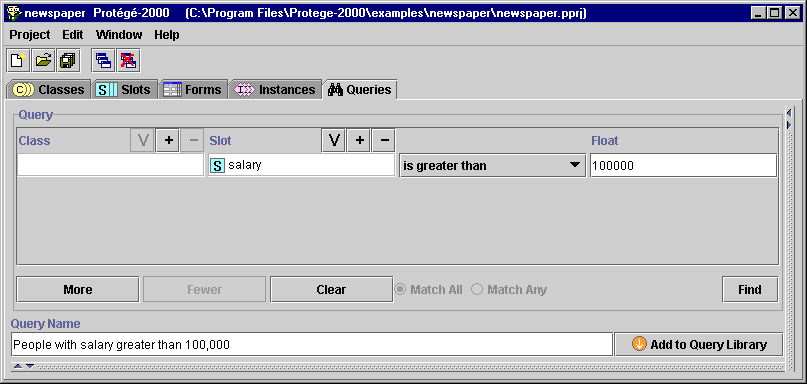
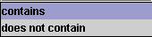
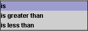
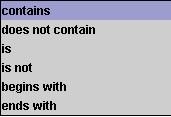
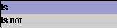

The Query Pane allows you to enter, modify, or save your queries.

The Query Pane has the following components:
Each query bar has:
Choices for the criteria menu and value are as follows:
| Slot Type | Criteria Menu | Action |
| Boolean | Verifies whether or not the Boolean value is true or false, as selected from the menu at the right. | |
| Class |  | The selected criterion is compared to a class
selected at the right. To select a class, click the Select Class |
| Float |  | The selected criterion is compared to the value typed in the Float entry bar at the right. |
| Instance | The selected criterion is compared to an
instance selected at the right. To select an instance, click the Select
Instance |
|
| Integer | The selected criterion is compared to the value typed in the Integer entry bar at the right. | |
| String |  | The selected criterion is compared to all or part of a string typed in the entry bar to the right. For example, selecting begins with and typing M in the String entry bar will find all instances of the selected class/slot combination that begin with M. |
| Symbol |  | The Symbol entry bar to the right becomes a drop-down menu that displays all possible values for the slot. The selected criterion is compared to the value. |
| More | Click this button to create an additional query bar, which can then be set with class, slot, and criterion. |
| Fewer | If there are two are more query bars, click this button to remove the bottommost query bar. |
| Clear | Click this button to clear all query bars and reduce the Query Pane to a single, blank query bar. |
| Match All | For two or more query bars, click this button to specify that any instance found must match all the criteria (the intersection or AND) specified in the query bars. |
| Match Any | For two or more query bars, click this button to specify that any instance found must match at least one of the criteria (the union or OR) specified in the query bars. |
| Find | When the query has been set up as desired, click this button to find all instances that match the selected criteria. |
The Query Name bar at the bottom of the pane allows you name a query by typing any string.
| When the query has been set up as desired, click this button to save the query in the Query Library using the name in the Query Name bar. |
Next: The Search Results Pane